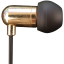
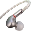
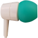

Rankings
Good picks
| Image | IEM | Score | Summary |
|---|---|---|---|
|  | Moondrop Crescent | 78 | Well tuned with a mild v-shape, lots of warmth but pleasantly balanced. |
|  | TinHiFi T2 Plus | 73 | Pleasantly tuned and neutral sounding, the tonality is almost spot on. Not for everyone, can be percieved as cold/anemic. |
|  | Sony MH755 / MH750 | 55 | A harman-ish IEM, hard to come by nowadays but pleasantly tuned and non-fatiguing. |
Decent
| Image | IEM | Score | Summary |
|---|---|---|---|
| Samsung AKG EO-IG955 | 65 | Well balanced v-shaped tuning that results in something marginally shouty, but overall pleasant. | |
| TinHiFi T2 | 64 | The old budget recommendation for neutrality, having since been overshadowed by it's T2 Plus successor. Tonally decent, though particularly anemic sounding and lacking in bass extension, and can often be fatiguing to listen to. | |
| KZ ZSN Pro | 62 | A well balanced v-shaped tuning, with good punch in the bass, and better tonality than the original, at the cost of being fatiguing. | |
| KZ ZSN | 60 | A well balanced v-shaped tuning, with good punch in the bass, and competent tonality. |
Mediocre
| Image | IEM | Score | Summary |
|---|---|---|---|
| Senfer DT6 | 54 | An attempt at something between v-shaped and neutral that suffers from strange tonality in the upper mids, and boomy midbass. Not the worst, but nothing special. | |
| KZ ZST | 51 | An earlier KZ model, with expected v-shaped tuning. Tone is slightly off, with a shouty upper midrange. | |
| KZ ATE / KZ ATR | 49 | The KZs that started it all. Expected KZ v-shaped tuning, with no treble extension and a shouty midrange. | |
| EZAudio D4 | 44 | A budget recommendation that disappeared as quickly as it appeared. Looks pretty, feels not so pretty, and sounds very mediocre, with yet some more v-shaped tuning. |
Disappointments
| Image | IEM | Score | Summary |
|---|---|---|---|
| Sony MDR-EX15LP | 39 | A victim to Sony's modern iteration of the MDR in-ear line-up. Dark sounding, with no treble extension. | |
| TRN V80 | 32 | Yet another overhyped v-shaped IEM that suffers from severe piercing treble issues. | |
| KZ ZSA | 27 | Yet another overhyped KZ IEM that suffers from severe piercing treble issues. |
Hot garbage
| Image | IEM | Score | Summary |
|---|---|---|---|
| British Airways Complementary Earphones | 0 | I should have been paid for enduring the displeasure of listening to something so abysmal. Alas, here we are. Ruins music. |